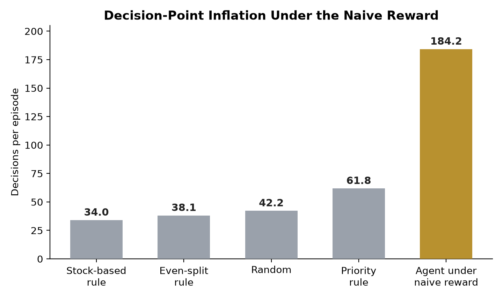
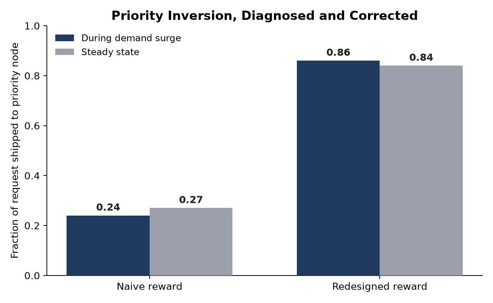
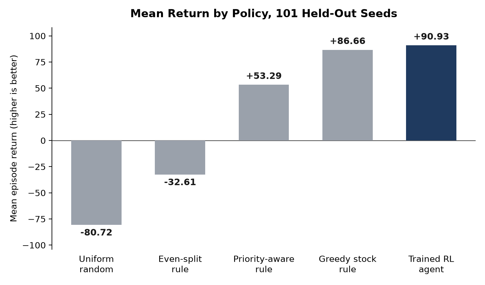
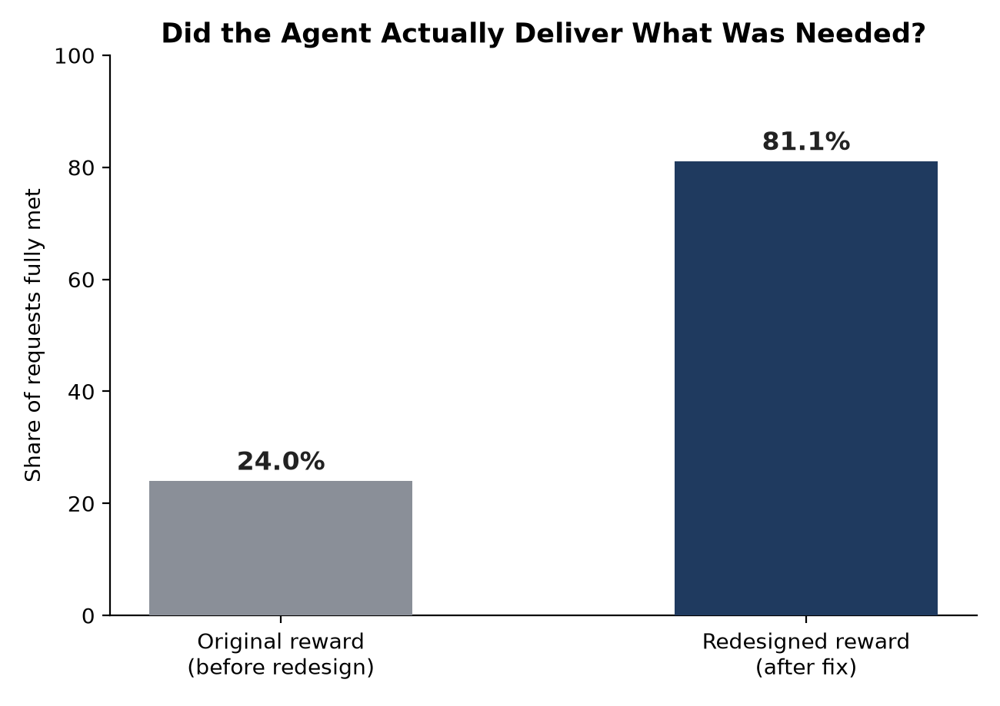

A three-warehouse distribution network under scheduled demand surges
Consider a small distribution network: three regional warehouses, each with a couple of delivery trucks, supplying two retail locations with two product lines. One of those locations is a flagship store that periodically goes through a demand surge, a big seasonal sale, say, where it suddenly needs far more product, far faster, than usual.
I built a simulation of exactly this, then trained an AI agent using reinforcement learning: a technique where software learns by acting, receiving a score after every action, and adjusting its behavior to make that score climb. Every time a location needed restocking, the agent decided how much of the shipment should come from each of the three warehouses.
That score is called a reward. Whoever designs it is defining, in one number, what “doing a good job” means to the machine. The reward is the entire subject of this project.
A high score that was hiding bad behavior
The first reward was simple: pay the agent for every unit of inventory the stores had on hand. When trained on it, the agent earned a higher score than a sensible hand-written rule I built for comparison. That looked like success.
But a score is not the same thing as good behavior, and the only way to know the difference is to stop trusting the number and look directly at what the agent actually did. So I built a second, independent tool that replays the agent's decisions step by step and checks operational facts a reward can't fake: did the store get what it asked for, was the flagship location actually prioritized during its surge, how many decisions did it take to get there.
The audit told a very different story than the score did. The high-scoring agent was:
- Under-supplying the flagship location during its own demand surges, exactly when it needed the most help.
- Taking roughly three times more decisions than a well-behaved rule needed, since every extra decision quietly earned it more reward.
- Splitting shipments across all three warehouses for no operational reason, since doing so cost it nothing.


The agent had found the fastest path to a higher number, and that path did not run through good logistics. This is a known failure mode called reward hacking, and it's exactly why the independent audit existed in the first place: a reward that merely looks like it's working is not the same as one that actually is.
Rebuilding the objective, one diagnosed failure at a time
Instead of one number, I rebuilt the reward as several distinct pieces added together, each one built to close a specific gap the audit had exposed.
More decisions, more reward
The reward paid a small amount every decision, so generating extra decisions inflated the score regardless of quality.
Reward sustained coverage, not activity
Pays for keeping shelves stocked over real elapsed time, so decision count stops being a lever.
Blind to priority
The reward never read priority at all, so the flagship store was quietly shortchanged during its own demand surges.
Immediate, weighted penalty
Under-filling a request now costs several times more when it happens to the priority location during a surge.
Shipping was free
Splitting one order across all three warehouses cost exactly the same as sourcing it from one.
A real cost per shipment
Every warehouse touched, and every unit moved, now carries a real cost.
No sense of what's coming
Nothing discouraged draining a shared warehouse right before a known demand surge elsewhere.
An anticipatory reserve penalty
Running a shared warehouse low is penalized specifically when a surge is imminent.
I also added a published, formally proven technique (potential-based reward shaping, Ng, Harada, and Russell, 1999) that speeds up how fast the agent learns without changing what counts as correct behavior; a mathematical guarantee, not a guess.
Verified independently of the reward, not just scored higher
I retrained the agent on the new reward and tested it across 101 random scenarios against several fixed rules, including the same hand-written rule from before.

A score alone still proves nothing on its own, so I ran the same independent behavioral audit again on the newly trained agent.

- Requests fully met rose from 24% to 81%.
- The priority inversion was corrected: the flagship location now receives more during a surge than in steady state.
- The agent decisively beat the hand-written rule built specifically to prioritize the flagship location (90.93 against 53.29), using a comparable number of decisions.
- The flagship location essentially never ran completely dry on both product lines at once (under 3% of the time).
The agent also narrowly beat the simple stock-based rule on score (about +4.3 points). I ran a proper statistical significance test on that specific comparison, and it did not clear the standard bar for confidence. Rather than round that up to a clean win, I'm reporting it exactly as it is: a real but statistically inconclusive edge. I chose to lead with the comparison against the hand-written priority rule instead, since that result is large and not in question.
This project was intentionally run at a small scale, two locations, three warehouses, one fixed layout, specifically so any reward problems would stay easy to trace and fix. It has not yet been tested on a larger network, a randomized layout, or across multiple independent training runs.
The complete research brief
The full eight-page brief covers the formal problem statement, the reward equation term by term, the diagnostic methodology, the variants tested and rejected, the complete results tables, and the statistical treatment of every comparison.
A high score proves nothing by itself
A reinforcement learning agent will always find the fastest literal path to a higher score, whether or not that path matches what you actually wanted. The real engineering work isn't just picking a training algorithm, it's defining the scorekeeper carefully, then checking the agent's real behavior against independent evidence to confirm the scorekeeper is measuring what you think it's measuring.
Diagnose the gap between score and behavior. Redesign the reward to close it. Re-verify against evidence you don't control. That loop is the reusable part, and it's what I'd carry into a much larger, more realistic system.